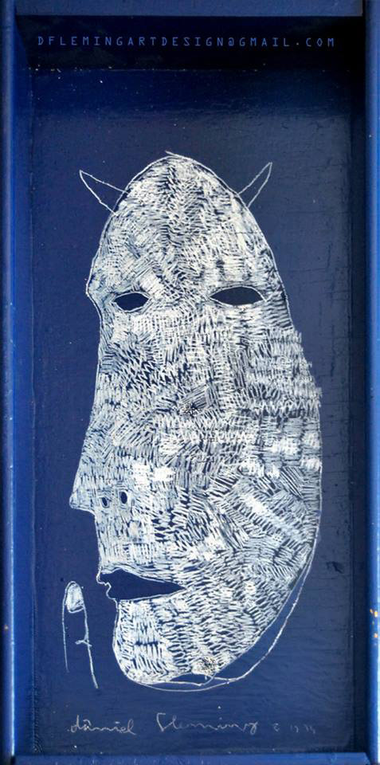

Daniel Fleming
Daniel Fleming came to Milwaukee for college to get away from his hometown in Minnesota, and settled right in. Attending MIAD for graphic design, Fleming didn’t see his future in fine art, until he became obsessed with painting. He wishes he could be painting 100% of the time, and these days he is painting on anything he can get his hands on.
Alot of Fleming’s work is made on repurposed materials like old cabinets, windows, chests, pallets and burlap, but rather than just paint or create work for the sake of creating, Fleming hopes to spark a dialogue, or at the very least a reaction between himself as the artist and the audience as the viewer.
Fleming strives for integration and community through art, especially given that the notion of art, because of high art, is oftentimes viewed as unattainable. Fleming discusses exposure to art, why people aren’t buying art, and the disconnect that people feel when reading a piece. People can feel removed from art and interpretation, for the fear that they don’t “get it” or are misinterpreting it wrong, but Fleming believes art is whatever you think it is, even if it differs from its original conceptual catalyst in creation.
Perhaps this is why his use of everyday objects or repurposed materials even appear to be having a conversation about what art constitutes through his choice of medium and the art itself, speaking to a greater evolution of how one would read his pieces. His work resembles the chaos, colors and imagery of Basquiat. The similarities in the scribblings and the sense of immediacy is definitely reminiscent in his work. Fleming says he is often working on many pieces at a time. Some taking an hour to complete, and others can taking weeks.
On his blog, he discusses his main goals that go into the making of his art. “I want my work to express a relatable issue in a way no one has yet presented it. In a way that opens new avenues of understanding in a way that advances our ability to interact and react to the world around us in a pro-active manner,” Fleming said.
amfm: Did you grow up making art? When did you begin seriously making art and how did you get into it?
daniel fleming: When I was growing up, I was constantly exposed to art through my mom and dad, despite the fact that neither of them worked in the creative field. I was brought to art galleries and fairs, shown documentaries, even spent weeknights drawing with my dad on the kitchen table, and though I really don't think I was ever pushed in any way toward a career in art, I've always been interested in something art-related. When I hit high school, I took my "doodling" to the next level and, with encouragement from my parents, I continued exploring the world of paint, until I basically spent all my non-homework and non-sporting hours in the basement working on art. I have always drawn, but I didn't think about fine art as a career until I began spending nearly all my free-time working on it. At that point, it was hard to think about anything else.
amfm: You studied design at MIAD, why did you design to study design rather than fine art or illustration, which you are currently doing? How does design influence your work?
fleming: To be perfectly honest, I picked MIAD based on a list of "great graphic design schools" I was given by a family friend. I had no intention of becoming a fine artist and, at the very least, figured I would go into illustration if design seemed too strict a creative field. When I got to MIAD, I realized how obsessed I was with painting and switched majors almost immediately, only to completely regret it for the entire semester. I had anxiety about telling my successful parents that I was going to be a painter. I thought I'd never be able to get a job or support myself, and frankly, I wasn't enjoying it much. The six hours of painting classes were appreciated (I learned a ton about technique and traditional working), but it bled my desire to work dry, and once I stopped working on art outside of classes, I stopped enjoying it. I switched back to design and never questioned it again. I still had classes that employed all of my creative ability, yet it was a much more analytical type of thinking that very much differs from the way I paint. Design and illustration became that "new" way of thinking creatively without removing my desire to create in my free time. I can't lie, if you asked me what I want to do, the answer is painting 100 percent of the time, but design and illustration fills this other category that allows me to be creative, while still setting boundaries and guidelines which can be shaken free when I turn to painting. The work I do in design inspires the work I do in fine art and vice-versa. It's the execution and purpose that really differs.
amfm: It seems that in the last year or so your work has been really prevalent in Milwaukee although you have been showing for 8 years, how did you sort of begin to gain recognition in Milwaukee and get more involved in the Milwaukee art scene?
fleming: I've been showing in Milwaukee since I got here about seven years ago for school (and a few years before that in MN), but the last year or so has really seen a dramatic increase in sales and visibility. I think the main reasons are the simple facts that I work REALLY hard, I work all the time, and I love the work I do. I try to work on at least one piece per night, operate a art-blog that reaches over 10k views per month, and am constantly reaching out to contacts for possible venues, projects, calls for art and other art-related endeavors. With my full-time job, I really don't stop working, but since I love the work I do, I really enjoy it. It may sound simple, but if I want to show a buyer that my work is worth something, I need to show that it's worth everything to me, and that effort has really helped, more than anything else, in my visibility and progression this year. Even if people don't know me or my work, they know i work hard and they know I'm serious. Those two things together are invaluable in attracting the kinds of people you need to further your career.
amfm: You talk about introducing the viewer to "reading a piece to help them learn how to understand artwork without needing to read a statement or talk directly with an artist," can you elaborate on this? How do you feel that you do this with your work? What if people read it differently that you intended?
fleming: I've never minded writing an artist statement, but I've also never enjoyed walking a person through any particular piece step-by-step. Not only does this often fail to effectively explain the piece or convey its emotion, but it also completely removes a genuine reaction to the piece (or at least changes that genuine reaction). I use my work as a "connect the dots" puzzle of sorts, not to simplify it too greatly. I present subjects taken from social, political or personal experience. I surround these with symbol, gesture, color and mark meant to shed light on the attitude toward those subjects, and then I wrap it all up in a title meant to give the viewer a spring board for dissecting the message of the piece. The subject opens the discussion, the symbol and gestures comment on that discussion, and then the title creates a specific avenue to interpret those subjects and symbols. Each aspect is intended to further the understanding and prompt thoughts, questions, and reactions from the viewer. Instead of asking the artist "What did you mean when you said this" I want the viewer to ask himself "How does the title apply to the imagery, and how does that change my understanding?" I don't want the viewer to ask for an answer, I want them to search for an answer, and the danger/excitement of that is that people very well may interpret it differently than I, but I don't think that's a problem. I try to be specific enough so that the subject and basic idea are understandable, but how someone reacts and what they feel about that idea, I want, to be completely honest. I have a specific idea about a piece, but if a genuine reaction disagrees, who am I to say that they are wrong or that the art wasn't successful?
amfm: Why do you think the ability to read artwork is an integral part of creating a successful and sustainable art community?
fleming: I think a big reason that so few people go out and buy original artwork is that, due to an unfamiliarity with the art and artists, many people are largely uncomfortable around artwork and in a gallery setting. Being able to read a piece of art, or rather, being comfortable developing your own understanding of a piece of art is just one way of bringing fine art off of a pedestal and taking down the intimidation factor. Art can sometimes take on this "genius" persona, when more often than not, it's made by a pretty regular guy down the street who happens to be really creative. If more people were comfortable with their genuine emotional reaction, instead of searching for what they're "supposed to feel," I think many more people would be willing to walk into an art setting and be confident enough to know if they want to spend money on a piece.
amfm: What are some of the narratives you want to convey through your work (in the context of being socially and culturally relevant)?
fleming: I take on a variety of subjects from a wide variety of inspirations, and I think a main concept that seems pervade each piece is that of taking the alternate perspective. Whenever I comment on a current social or political event, I find myself exploring a viewpoint, usually, that I had not once considered before that. While not pertaining to any omnipresent subject, each piece speaks to the idea of removing oneself from the situation to explore another perspective and enjoy the wonder of a completely different reality. Some recent work has been speaking about attempting to distance oneself from reality, and I think that connects back to our constant digital connections, a connection which leads to interaction and knowledge, but ultimately distances us from the "reality" behind those interactions.
amfm: Your artwork resembles Basquiat's, who you say is your favorite artist. Do you approach the work with the intent to model your work after his or was it sort of happenstance? What are some of your other influences?
fleming: The first artist I loved was Matisse, and a lot of my early work, even up to some work in college, largely resembled his bright compositions. But after a while, I felt like i had painted 1,000 barns, 1000 still lifes, 1000 nudes. It just wasn't as fun anymore, and I took a couple months off painting. After working in ink drawing and really enjoying some of the effects, I went to the Andy Warhol show at MAM and was blown away by a collaboration, or at least the Basquiat part of the collaboration, at that point, I was hooked. I really don't go into a piece trying to make something like Basquiat (and when I do, which happens, it usually doesn't turn out well), but as my interests and "favorites" changed, the way I was painting quickly followed along. Sometimes I look at my art books and am immediately inspired to create, but I usually have to make myself wait a bit to avoid subconsciously trying to recreate what I liked so much. I definitely like that my work resembles some of Basquiat's and some of my other favorite artists, but I also am glad to see innovation and differences throughout. I try not to think too hard about the famous guys when I'm working or I tend to get anxious, I tend to get critical and then that carefree nature of the work is gone. Basquiat is definitely my favorite artist, but a close second and third is Cy Twombly and Joan Miro, probably followed by Henri Matisse. Some other favorites are Richard Deibenkorn, Robert Motherwell, Clyfford Still, Jasper Johns, Picasso, Rodin, Giacometti, and about a thousand others.
amfm: What do you like about the immediacy of of doing things really quickly when it come to making art? How long do you typically spend on a piece? What's the longest you have spent on a piece (which one? and why so long)?
fleming: I like to work on at least two pieces at once, moving between the two and letting one develop as the other dries. I work in acrylic and often oil pastel, charcoal or other collaged materials, so a quick drying time is always nice. I suppose I just hate sitting still. I always want to be up moving around and, when painting, I always want to be able to make that next move whenever the thought strikes. I began my painting career using oils, and eventually I'd like to go back at some point, but I was just never the kind of artist that could make one solid stroke and then wait a day for the area to dry. I wanted to keep making marks, keep trying things out. One way I know a piece is done is if I've been staring at it, looking for a place to make the next mark. If it's taking more than 20 min to find something, I'm trying too hard and it's time to let the piece sit for a while. Sometimes I'll sit down to work on a piece and finish in less than an hour, sometimes I'll work on a piece throughout an entire weekend and show the piece in a gallery, only to take it down when the show's done and completely rework it.
amfm: You talk about this "criticism of Milwaukee not being able to support artists," where do you think this notion came from and do you believe it to be true?
fleming: I think the notion comes from the fact that there are MANY artists that feel they are "worthy" of making a living, but struggle greatly to get by in this city, but I also don't know if that's really anything unique to Milwaukee. I think we have a chance of making an art community here sustainable, but I also think you need to start with a different goal than that of an art mecca like NY. Selling multi-million-dollar Picasso's may create headlines, but I don't think that would really do anything for the local artists that sell work for $1k or less in the small gallery down the street. If "support" is really what we want, we need to go from the bottom up. I also think some artists just want to get paid and it's easier to complain then realize why you aren't succeeding. Lots of people "like" art. Lots are good, lots make stuff, and it doesn't mean you automatically get a salary for your effort. I think people confuse "support" with "easy to become a rich artist,” and they are very different concepts. Will MKE be the new global art hub where anyone that can pick up a pencil can sell art? No, (neither is NY btw) but can MKE be a place that a talented artist can make a good living and further their career? I think it can be, and I think it is for many artists, but you still have to work hard. If "support" means you don't have to try and will still get a paycheck every month, then no, MKE will never and should never become that, but if support means the possibility is there that you can cultivate a career, then we already have that to a degree and we just need to make that potential a bit a bit more accessible.
amfm: What do you think Milwaukee can do to cultivate a better scene for the arts?
fleming: One big step forward would be to show people that "art is entertainment." I can't tell you how many people I know that "could never afford an original," yet go to bars 5 times per week, spend $100+ on lunches per week and buy a new iPhone whenever it comes out. If they considered art "entertainment," maybe they'd realize that some of that massive bar budget could go toward sustaining a local artist for a month. That wouldn't make anyone a millionaire and might not do more than get the bills paid, but if a couple people for every 10,000 that go out every night in MKE decided to buy a piece of art instead of 52 $12 cocktails over the year, we're already taking a step in the right direction. Artists get paid - art is seen by more people - art becomes a more vital part of those people's everyday life and, therefore, becomes more prevalent in the community altogether. I think getting art into the heads of the 20-30 yr old young professionals could do wonders for the artists in the community while also creating a new generation of art-literate people that will spread it throughout various industries and social groups.
amfm: Why did you feel drawn to Milwaukee and feel as though it was your "home" growing attached to it despite being from Minnesota? What is the idea of home to you?
fleming: I don't try to connect myself too much to a physical area, and I think that stems from the fact that I grew up in a very non-art-minded city. I knew "home" couldn't be my future home if art was going to be part of that. I grew up hearing that the great artists are in NY, CHI, Paris etc., and so if I was going to believe I had any kind of a chance, I either needed to move to one of those places (which I didn't really feel comfortable doing) or I had to stop believing the notion that great artists have to be in one of a few cities. I came to Milwaukee for the basic fact that it WASN'T home, but that it felt new enough, while still not being quite as crazy NYC or CHI. I felt it was the right size of place where I could be comfortable but still feel as though I'm moving forward and making actual progress. I never thought of it as a final destination, but I never thought of it like a temporary stepping stone either, it's just where I am. Don't get me wrong, I love MKE and have no real plans to leave, but I also have never been one of those people that feels permanently attached to any particular place. I love the midwest and have always lived here, so I think it will always be a part of me, but the art is really what defines me and wherever that art is created is enough of a home for me.
|  |
For more from Daniel Fleming:
http://www.danielflemingart.com
daniel fleming studio on facebook